目的 :
この記事の (ドラスティックな) 主張 :
魔除け :
const の有無を精査しない．struct Foo {
int member;
int method() { return this->member; }
};これは，次の糖衣構文とみなせる．
struct Foo {
int member;
};
int foo_method(Foo *this) { return this->member; }struct Base {
int base;
virtual void virt1() { puts("b1"); } // 仮想関数
virtual void virt2() { puts("b2"); } // 仮想関数
void non_virt() { puts("bn"); } // それ以外
};これは，次の糖衣構文とみなせる．
void base_virt1(Base *this) { puts("b1"); }
void base_virt2(Base *this) { puts("b2"); }
void base_non_virt(Base *this) { puts("bn"); }
void *BaseVtable[] = { (void*)base_virt1, (void*)base_virt2, };
struct Base {
void **vptr = BaseVtable;
int base;
};
簡単なケースのみを扱う．
仮想関数が増える場合や多重継承は扱わない．
基本は継承元クラスの vtable と同じものを作る．
ただし，メソッドのオーバーライドがある場合はテーブルのエントリを書き換える．
struct Extend: public Base {
int ext;
void virt1() { puts("e1"); }
void non_virt() { puts("en"); }
};これは，次の糖衣構文とみなせる．
void extend_virt1(Extend *this) { puts("e1"); }
void extend_non_virt(Extend *this) { puts("en"); }
void *ExtendVtable[] = { (void*)extend_virt1, (void*)base_virt2, };
struct Extend {
void **vptr = ExtendVtable;
int base;
int ext;
};
Base b;
b.virt1();
b.virt2();
b.non_virt();
Extend e;
e.virt1();
e.virt2();
e.non_virt();これは，次の糖衣構文とみなせる．
typedef void(*B)(Base*);
typedef void(*E)(Extend*);
// vtable of Base 0: base_virt1
Base b; // 1: base_virt2
((B)(b.vptr[0]))(&b); // call base_virt1
((B)(b.vptr[1]))(&b); // call base_virt2
base_non_virt(&b); // vtable of Extend 0: exntend_virt1
// 1: base_virt1
Extend e;
(E)(e.vptr[0]))(&e); // call extend_virt1
(E)(e.vptr[1]))(&e); // call base_virt2
extend_non_virt(&b);Base* なので
引数にExtend* を渡すのは不正では？以上の性質を踏まえると，アップキャストと動的ディスパッチの仕組みが何となく分かるはず．
Extend e;
Base *upcast = &e;
upcast->virt1();
upcast->virt2();
upcast->non_virt();これは次の糖衣構文とみなせる．
typedef void(*B)(Base*);
Extend e;
Base *upcast = (Base*)(&e);
((B)(upcast->vptr[0]))(upcast); // Q1. 呼ばれる関数は？
((B)(upcast->vptr[1]))(upcast); // Q2. 呼ばれる関数は？
base_non_virt(upcast);
struct Base {
int base;
virtual void virt1() { puts("b1"); }
virtual void virt2() { puts("b2"); }
void non_virt() { puts("bn"); }
};
struct Extend: public Base {
int ext;
void virt1() { puts("e1"); }
void non_virt() { puts("en"); }
};
int main(void) {
Base base;
base.virt1(); // ??
base.virt2(); // ??
base.non_virt(); // ??
Extend ext;
ext.virt1(); // ??
ext.virt2(); // ??
ext.non_virt(); // ??
Base *upcast = &ext;
upcast->virt1(); // ??
upcast->virt2(); // ??
upcast->non_virt(); // ??
return 0;
}
Q. ?? の出力は？
#include <cstdio>
#include <cassert>
struct Base {
int base;
virtual void virt1() { puts("b1"); }
virtual void virt2() { puts("b2"); }
void non_virt() { puts("bn"); }
};
struct Extend: public Base {
int ext;
void virt1() { puts("e1"); }
void non_virt() { puts("en"); }
};
typedef void(*B)(Base*);
typedef void(*E)(Extend*);
int main(void) {
Base base;
void **base_vptr = *(void***)(&base);
((B)(base_vptr[0]))(&base); // b1
((B)(base_vptr[1]))(&base); // b2
Extend ext;
void **ext_vptr = *(void***)(&ext);
((E)(ext_vptr[0]))(&ext); // e1
((E)(ext_vptr[1]))(&ext); // b2
Base *upcast = &ext;
assert((void*)upcast == &ext);
void **upcast_vptr = *(void***)(upcast);
((B)(upcast_vptr[0]))(upcast); // e1
((B)(upcast_vptr[1]))(upcast); // b2
return 0;
}#include <cstdio>
struct Base;
void Base_virt1(Base *self) { puts("b1"); }
void Base_virt2(Base *self) { puts("b2"); }
void Base_non_virt(Base *self) { puts("bn"); }
void *base_vtable[] = { (void*)Base_virt1, (void*)Base_virt2 };
struct Base {
void **vptr = (void**)base_vtable;
int base;
};
struct Extend;
void Extend_virt1(Extend *self) { puts("e1"); }
void Extend_non_virt(Extend *self) { puts("en"); }
void *extend_vtable[] = { (void*)Extend_virt1, (void*)Base_virt2 };
struct Extend {
void **vptr = (void**)extend_vtable;
int ext;
};
typedef void(*B)(Base*);
typedef void(*E)(Extend*);
int main(void) {
Base base;
((B)(base.vptr[0]))(&base); // b1
((B)(base.vptr[1]))(&base); // b2
Base_non_virt(&base); // bn
Extend ext;
Extend_virt1(&ext); // e1
((E)(ext.vptr[1]))(&ext); // b2
Extend_non_virt(&ext); // en
Base *upcast = (Base*)&ext;
((B)(upcast->vptr[0]))(upcast); // e1
((B)(upcast->vptr[1]))(upcast); // b2
Base_non_virt(upcast); // bn
return 0;
}